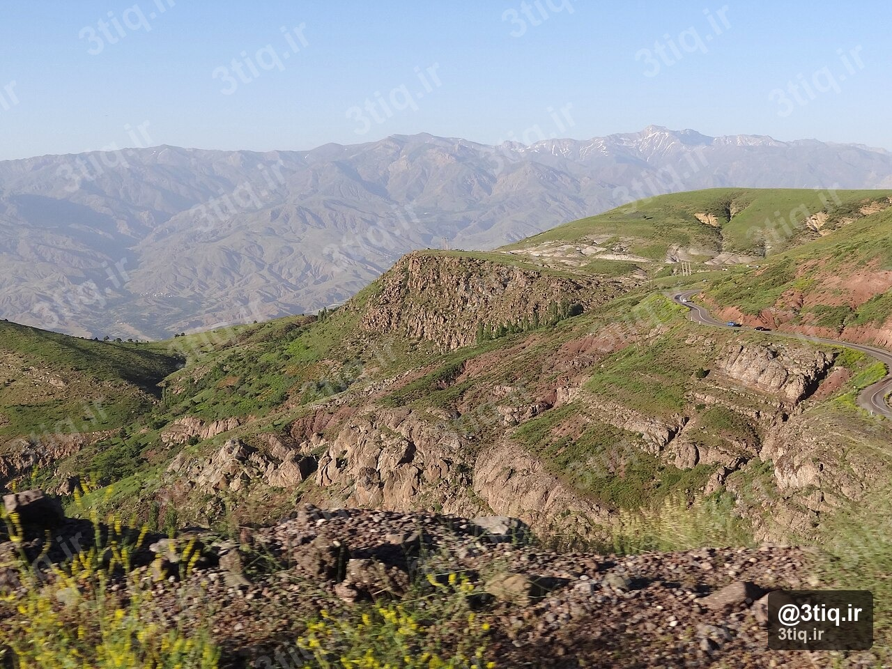

رشتهکوه دنا با قلهٔ اصلی بیشتر (۴۴۰۹ متر)، ششمین قلهٔ بلند ایران و یکی از محبوبترین مقاصد زاگرس است. درههای پوشیده از گل، چشمههای زلال و پناهگاه کوهستانی، دنا را برای صعود دو روزهٔ متوسط ایدهآل میکند.
این مطلب ادامهٔ سری راهنمای صعود ۱۲ قله محبوب سه تیغ است. برای نقشهٔ تعاملی مسیرها، گالری و آبوهوای زنده، صفحه اختصاصی دنا را هم ببین.

آشنایی با دنا
دنا در استان کهگیلویه و بویراحمد قرار دارد و چندین قلهٔ بالای ۴۰۰۰ متر دارد؛ «قله بیشتر» نقطهٔ کانونی اکثر برنامههای کوهنوردی است. نوع مسیر عمدتاً علفزار و صخرهٔ سبک است — برخلاف هزار یا زردکوه، یخچال ثابت ندارد، اما در بهار و تابستان باد، مه و تابش مستقیم آفتاب چالش جدیاند.
اگر اولین صعود دو روزهٔ جدی توست، دنا در کنار سبلان در ۵ قله مناسب برای شروع معرفی شده است.
مسیرهای صعود
مسیر سیاسرت (اصلی)
- طول: حدود ۱۴ کیلومتر (مجموع دو روز)
- اختلاف ارتفاع: حدود ۲۰۰۰ متر
- زمان روز قله: ۸ تا ۱۰ ساعت
- سختی: متوسط
- شبمانی: پناهگاه دنا (≈۳۲۰۰ متر)
روز اول: پیادهروی از درهٔ سیاسرت میان باغهای وحشی تا پناهگاه. روز دوم: صبح زود حرکت به سمت قله و بازگشت به پناهگاه یا پاییندست. جزئیات روی نقشه در صفحه دنا مشخص است.
مسیر تلخسرو
- طول: حدود ۱۲ کیلومتر
- اختلاف ارتفاع: حدود ۱۸۰۰ متر
- زمان: ۷ تا ۹ ساعت (روز قله)
- کمپ: کمپ درهٔ تلخسرو — معمولاً خلوتتر از سیاسرت
پناهگاه و شبمانی
- پناهگاه دنا (≈۳۲۰۰m): ظرفیت محدود؛ رزرو یا هماهنگی با باشگاه محلی توصیه میشود
- آب: در پناهگاه معمولاً در دسترس است — برای روز قله بطری پر همراه داشته باش
- جانپناه قله (≈۴۱۰۰m): فقط برای شرایط اضطراری — برنامهٔ عادی شبمانی آنجا نیست
- اگر جا پر بود: چادر در محوطهٔ مجاز نزدیک پناهگاه — کیسه خواب مناسب شبهای کوهستانی
بهترین فصل
پنجرهٔ کلاسیک: اردیبهشت تا خرداد برای گلهای وحشی و هوای معتدل؛ تابستان هم ممکن است اما گرما در پاییندست و خطر مار و عقرب بیشتر میشود.
- بهار: بهترین ترکیب منظره و دما — هنوز باد سرد شب را جدی بگیر
- تابستان: شروع خیلی زود صبح؛ آفتاب و UV روی ridge شدید است
- پاییز: با تیم مجرب و چک دقیق آبوهوا
- زمستان: فقط برای کوهنوردان مجهز برف
تجهیزات ضروری
- کفش کوهنوردی با آج مناسب علفزار و سنگ
- سیستم لایهای — لباس سهلایه برای شب در پناهگاه
- چراغ قوه برای شروع قبل از طلوع روز دوم
- آب و برنامه آبرسانی — آبرسانی در ارتفاع
- کلاه، ضدآفتاب و عینک — مسیر روز قله زیاد در آفتاب است
- GPS / نقشه یا اپ آفلاین؛ مه گاهی مسیریابی را سخت میکند
نکات ایمنی
- در فصل گرم: کفش بلند، توجه به مار و عقرب؛ وسایل را بیرون چادر نگذار
- باد و مه ناگهانی در زاگرس رایج است — turnaround time داشته باش
- ظرفیت پناهگاه محدود است؛ برنامهٔ جایگزین (چادر) از قبل
- زیستگاه پرندگان نادر — فاصلهٔ ایمن و بدون مزاحمت
- برای مقایسهٔ سختی زاگرس: راهنمای زردکوه سختتر و برفمحورتر است
مشاهده صفحه دنا ←